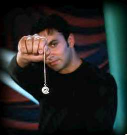
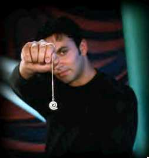

Signs for technical/specialized vocabulary
David Bar-Tzur
Links updated monthly with the help of LinkAlarm.
 

Halloween1; hypnosis.2
EXPLANATION OF THE GLOSSING SYSTEM
(to understand how I describe the signs in this dictionary).
For content knowledge of how to use the physics terms in context, see Guided tutorial in physics for interpreters.
For negotiating and developing temporary signs, see Preparation and sign negotiation
For vocabulary lists to determine helpful signs for a specific discipline, see Vocabulary lists by topic.
- "h 2 region"
- (1) "H" I-I R-AREA. (2) "H" NUMBER-TWO R-AREA.
- Habakkuk [Heb. Chavakuk]
- H-A-B.
- habeas corpus
- H-A-B-E-A-S C-O-R-P-U-S.
- habit
- (2h)[5:], POs down, FOs away, cross hands at wrist and descend while changing HSs to (2h)[S].
- habituate
- GET-USED-TO, that is, (2h)[5:], POs down, FOs away, both hands descend while changing to (2h)[S].
- hadith
- MUHAMMAD STORY.
- hafnium
- H-F. For more information on this and other elements, see The elements. And for fun, see Elements by Tom Lehrer. To see this song with captions, go to The Elements song by Tom Lehrer.
- Haftarah
- PROPHET WRITE, EXTRACT. EXTRACT = (2h)[V], POs ><, FOs > placement of the book of the prophets. Hands are brought upward while fingers bend into (2h)[V:].
- hagbah
- ~ (Ashkenazim)
- HONOR HOW? TORAH (2h)S-CL'lift Torah by
grasping bottom handles and turning around so that the congregation can see'.
- ~ (Sephardim)
- HONOR HOW? TORAH (2h)B^-CL'lift Torah by grasping bottom of case and swinging two halves outward on middle hinge'.
- Haggadah
- (1) PASSOVER BOOK. (2) H-BOOK.
- Haggai [Heb. Chagai, Chagei]
- H-A-G.
- Hag Sameach!
- (1) HAPPY HOLIDAY. (2) HAPPY + (mention specific holiday). of festival may be inserted between "Hag" and "Sameach".
- hail
- HONOR.
- hair cells
- HAIR C-E-L-L (2h)4wg-CL, FOs up wiggle.
- hairdo
- (2h)[5:], POs > head, FOs up, travel up head closing 2x to (2h)[A].
- hairdresser
- HAIRDO AGENT.
- hair stylist
- HAIRDO AGENT.
- hairy
- (HAIR +) FTs of [5:] circle against area that is hairy.
- Haiti
- [H], PO > signer, touches side of arm. To see the reference source for the sign(s) for this country or to look up other countries in the same geographical area, see Indigenous signs for countries. To find signs for cities within this country (some have no entries) see Indigenous signs for cities.
- Hajj (الحج) - The pilgrimage to Mecca
- (1) VISIT MAKKAH WORSHIP. (2) (2h)[O^], DH PO down, NDH PO up, hands revolve around each + [A] moves like throwing something and ends in an [L]. For a film of this Saudi sign, see Pilgrimage. (< worshippers walking around the Ka'bah and throwing stones at an obelisk, which is part of the Hajj)
- Hakkafot
- TORAH CARRY, (2h)4-CL'march single file' (2h)1-CL'around and around'.
- Halacha
- (1) JEWISH LAW. (2) H-LAW.
- halal (حلال) - Muslim parallel to kosher
- ALLAH + [B], PO > signer, FO up, touches FT to mouth, then moves away while pronating (turning PO away). For a film of this Saudi sign, see halal.
- half court press
- ONE-HALF + (2h)[5], hands are held together and DH rubs from side to side against NDH, which is held stationary.
- half duplex
- H-D-X.
- half-life
- T ONE-HALF"subscripted", that is, the fingerspelled letter "T" is shown (without shaking) and the fraction ONE-HALF is produced but at a slightly lower level to mimic the usual symbol for half-life (t1/2).
- half profile
- ONE-HALF + [1], PO > signer, FO up, pronates PO to face away from signer.
- half-time (basketball)
- [B], PO up, is inserted several times between the middle and ring fingers of NDH [B].
- half-twist dive
- [B], PO away, supinating to PO up, FO away, like the DH in the sign DIE. ?
- half-twist jump (Diving)
- [B], PO away, FO up, supinates, rises slightly and descends.
- half-way house
- ONE-HALF WAY HOUSE.
- hallelujah
- (1) CLAP-HANDS~CELEBRATE. For a QuickTime movie of this sign, see ASL browser - Hallelujah. (2) CLAP-HANDS~CELEBRATE + open hands into (2h)[5] while lifting. (3) CELEBRATE + open hands into (2h)[5] while lifting. (4) PRAISE GOD.
- hallow, hallowed
- (1) HONOR. (2) HOLY.
- Halloween
- (1) (2h)[B^], PO towards, FOs up, cover and uncover face several times by pronating and supinating. For a QuickTime movie of this sign, see ASL browser - Halloween . (2) (2h)[H], PO towards, FOs up, cover and uncover face several times by pronating and supinating.
- hallucinate, hallucinations
- (1) (2h)[5], POs > head, alt. circle at respective temples while wiggling straight fingers. (2) Hands are held at eye level on their respective sides and DH opens from [S] to [5:], then NDH opens from [S] to [5:], and finally DH moves in front of head and opens from [S] to [5:].
- hallucinogen, hallucinogenic drug
- PILL (which see) + (2h)[5], POs > head, alt. circle at respective temples while wiggling straight fingers.
- halo
- ~ (angel or saint)
- (2h)[bC], PO><, FO away, are held above head like a halo. For a QuickTime movie of this sign, see ASL browser - saint.
- halo (galactic)
- H-A-L-O.
- ~ (glow around an object)
- SHINY + (2h)[bC], PO><, FO up, are held around place where the object that has been spatialized.
- ham
- ~ (acting)
- PERFORM EXAGGERATE.
- ~(food)
- H-A-M.
- Haman
- [H dot]->[A dot]@upper lips, as if Haman had a curly moustache like the villains in silent movies.
- hamantashen
- (2h)[G], POs away, separate and close to describe a triangle. (< shape of the cookie.)
- hamburger
- (2h)[C], POs ><, DH descends from above and clasps NDH, and vice versa.
- hammer
- [S] mimes swinging hammer twice. For a QuickTime movie of this sign, see ASL browser - hammer.
- haMotzi
- BLESS BREAD.
- hamster
- [1], PO > NDS, FO up, moves > NDS twice with pursed lips. For a movie of this sign, see Dictionary of Sign (ASL) - hamster.
- handball
- (1) [B] is held far back and slaps imaginary ball into wall. (2) [B] is held far back and slaps imaginary ball into wall, then NDH [B] hits it.
- hand brake
- Right hand [B], PO away, is held in place to represent the step brake and the left hand [S] pulls back on the hand brake.
- handcuffs
- DH grasps NDH by the wrist, then vice versa + (2h)[5:], are held up with wrists crossed. For a QuickTime movie of this sign, see ASL browser - handcuffs.
- handicap (disability and sports term)
- H-C.
- handicraft
- HAND MAKE. For a QuickTime movie of this sign, see ASL browser - handicraft.
- hand shield
- NDH [S] mimes hold a shield to the face and [B^] moves up and down the face to show the shield.
- hands-on
- HANDS ON.
- hanger (HVAC)
- [X], PO away, FO up, is brought down on [1], PO down, FO > DS, and vibrates slightly to show this is a noun, not the verb TO-HANG.
- Hannukah
- (1) (2h)[4], POs away (some use POs >) signer, FOs up, index fingers touch and then separate while sweeping up in an arc, like the arms of a candelabra. (2) (1) with fingers wiggling. (3) (1) with POs away from signer and the HSs replaced by(2h)[H dot]. (4) (2h)[B], PO away, FO up, touch and spread out to (2h)[4]. For a QuickTime movie of this sign, see ASL browser - Hanukkah.
- haOlam haBa
- WORLD AFTER MESSIAH COME.
- haploid
- "N".
- Happy Chinese New Year!
- Clasp NDH over DH [S], FOs up, and shake the hands forward and back while bowing head and closing eyes momentarily. The actual greeting for this is "Congratulations on your impending good fortune!", but this sign is also the (Chinese) hearing gesture that accompanies it.
- hardball
- H-A-R-D-B-A-L-L.
- hard disk
- HARD + [D] circles [B], PO up.
- hard disk controller
- H-D-C.
- hard disk drive
- H-D-D.
- hard drive
- HARD MOTOR.
- hard of hearing
- H-H.
- hardware
- ~ (computer)
- (1) H-W. (2) HARD W-A-R-E.
- ~ (tools)
- H-A-R-D-W-A-R-E.
- hardwired array logic
- H-A-L.
- Hari Raya Haji
- [O^] circles head from above.
- Hari Raya Puasa
- Shake hands with self.
- harmonic motion
- MOVE"side to side" + H-A-R-M-O-N-I-C.
- harmonic oscillation
- H-A-R-M-O-N-I-C O-S-C-I-L-L-A-T-I-O-N, later "H" "O".
- hash
- ~ (computers)
- H-A-S-H.
- ~ (drug)
- cut ~
- (1) Hash is held with [O^], PO > DS, and is cut with [B], PO > NDS, multiple times. (2) (1) + H-A-S-H.
- ~ oil
- (1) H-A-S-H + thumb of [Y] drags along [1], PO > DS, FO away, as if pouring oil on a joint. (2) H-A-S-H + [1], PO > signer, FO > NDS, runs side of finger along palm of [B], PO up, FO away, as if applying oil to cigarette paper.
- HaShem
- (1) GOD. (2) Some Deaf Jews object to (1) because they believe the hand movement is etymologically related to Jesus' resurrection and therefore borrow the Israeli sign where one simply points with one's index finger to "heaven". (3) NAME*, that is NAME is signed emphatically.
- HaShem Tz'vaot
- LORD, HIMSELF CONTROL ANGEL GROUP.
- hashgacha
- KOSHER SUPERVISE.
- hashgacha klalit
- GOD SUPERVISE (or TAKE-CARE-OF) EVERYTHING.
- hashgacha pratit
- GOD SUPERVISE (or TAKE-CARE-OF) EACH++.
- Hassid (pl. Hassidim)
- (2h)[1] touch sideburns and descend in spirals.
- Hassidic (adj)
- (2h)[1] touch the sideburns and descend in spirals + POSS.
- hassium
- H-S. For more information on this and other elements, see The elements. And for fun, see Elements by Tom Lehrer. To see this song with captions, go to The Elements song by Tom Lehrer.
- hatch (egg)
- (2h)[5:] hold FTs together like BALL and crack open. For a QuickTime movie of this sign, see ASL browser - hatch.
- Havayeh
- (1) L-KING. (2) A-KING. (3) [L] touches ND clavicle then travels upwards. (4) [A] touches ND clavicle then travels upwards.
- Havdalah
- (1) SEPARATE. (2) DH [H], PO > signer, moves across body like DARK beyond NDH [S], held like TABLE. (< initialization of SUNSET).
- have mercy
- (1) PLEASE KIND TO US, where KIND is (2h)[B], POs > signer, FOs ><, DH revolves around NDH. (< wrapping a bandage as an act of kindness.) (2) FEEL PITY. Note: Many Deaf people avoid (2), believing it to be negative.
- HAVE-NONE
- (2h)[B], POs > signer move upwards past mouth and swing upwards and apart while mouth blows on hands as they pass.
- hazan
- C-MUSIC AGENT.
- HBIGDA (pronounced "h - big - duh")
- H-B-I-G-D-A. Harry Benjamin International Gender Dysphoria Association. Now known as The World Professional Association for Transgender Health (WPATH).
- head
- ~ (piston)
- (1) HEAD. (2) Fist rises and falls within the confines of NDH [C], PO > DS, FO away, which represents the cylinder + NDH wipes fist to indicate head.
- ~ (word processing)
- HEAD + (2h)G-CL'banner'.
- head (classifier)
- Use an [S] to show the placement and movement of the baby's head during pregnancy or birth.
- headband
- FT of [G] are drawn across forehead.
- header (word processing)
- HEAD + (2h)G-CL'banner'.
- head first (diving)
- (1) HEAD + [1], PO down, FO away, supinates and strikes the thumb of [A dot], PO > signer, FO > DS. (2) Hands held like ENGLISH but DH places thumb under NDH, and this is in turn held straight out. This is a protective measure by the diver to prevent a concussion and actually is held above the head, but Deaf divers don't sign it that way for sign economy.
- headlights
- (2h)[O^], PO > front, open to (2h)[5^] as if turning on headlights.
- H/headquarters (general and Jehovah's Witness)
- H-Q.
- headset
- Depending on the size of the earphones, from largest to smallest, (2h)[5:] or (2h)[O^] or (2h)[bO] surround or are inserted into respective ears.
- head shop (sells paraphernalia for drugs)
- STORE PIPE, PAPERS, ROLL-A-JOINT, ETC.: STORE + [L: dot] holds pipe to mouth and circles in a plane parallel to the floor with lips pursed + PAPER + (2h)[O^], POs up, FOs away, move forward while closing to (2h)[A] in a small double movement + ETC.
- hearing (in court)
- COURT CONFRONT.
- hearing aid
- ~ (ITE - in the ear)
- [F] places aid inside ear canal.
- ~ (OTE - over the ear)
- [V:] or [X] places aid over the ear.
- hearing ear dog
- EAR DOG.
- hearing loss
- ~
- HEAR LOSE.
- adventitious (~)
- AFTER BORN.
- conductive (~)
- SEND++.
- congenital (~)
- BORN WITH.
- mild (~)
- LIGHT-WEIGHT.
- moderate (~)
- Small finger side of [B] taps against middle of index finger side of [B], PO > signer, FO > DS.
- postlingual (~)
- AFTER LEARN ENGLISH.
- postvocational (~)
- AFTER LEARN WORK.
- prelingual (~)
- BEFORE LEARN ENGLISH.
- prevocational (~)
- BEFORE LEARN WORK.
- mild (~)
- LIGHT-WEIGHT.
- profound (~)
- DEEP.
- sensorineural (~)
- S-N.
- severe (~)
- SERIOUS.
- hearsay
- TESTIFY WHAT OTHER PERSON SAY (FORBIDDEN).
- heart attack
- [open 8] touches the heart, moves forward while closing to an [S] and strikes palm of [B], PO > chest, FO > DS.
- heartbeat
- (1) Both hands are [B], POs > signer, and the DH
nods at wrist alternately slapping the chest and the NDH palm to indicate the heart beating. (2) [open 8] touches the heart, then DH is held against palm of [B], PO > signer, FO > DS, squeezing fist open and closed several times.
- Hearts
- ~ (card suit)
- Middle finger of [open 8] taps at left side of chest.
- "One of ~" . . . "Ace of ~"
- ONE (with PO away) + HEARTS (as described above), and so on for the numbers. After "10", sign "J" for "Jack", "Q" for "Queen", "K" for "King", and "A" for "Ace". The number or letter can be shown on the NDH and the DH can sign HEARTS.
- heat
- ~ (n)
- [5:] scratches up chin slightly several times. Notice the difference between this and HOT.
- ~ (v)
- [5:] scratches up chin slightly several times + [5], PO > signer, is held below [B], PO down, and DH wg.
- heat capacity
- "C".
- heater
- [5:] scratches up chin slightly several times. Notice the difference between this and HOT.
- heating degree days
- H-D-D.
- heat of formation
- "H" F"subscripted".
- heat of reaction
- "H" R-X-N"subscripted".
- heat transfer multiplier
- H-T-M.
- heat up
- [5:] scratches up chin slightly several times + (2h)[A dot], POs > signer, FOs ><, move upwards.
- Heaven
- (1) Hands are held high and the sign ENTER is executed. (< entering Heaven.) For an animated gif of this sign, see Animated dictionary of religious signs - Deaf Missions: Heaven. (2) (2h)[B^] are held high and revolve around each other and separate. For an animated gif of this sign, see Animated dictionary of religious signs - Deaf Missions: Heaven.
- Heavenly Father
- (1) (2h)[A], FOs up, DH is held against forehead, NDH close to head but lower, both hands open to (2h)[5] while moving upwards. (2) HEAVEN + (1) above. (3) (1) + IN HEAVEN.
- Heavenly Host
- ANGEL SCADS-OF, where the second sign is (2h)[5:], POs down, FOs away, hands move forward to show the large number of angels. Best if the hands are held high to show the angels in Heaven.
- Hebrew
- (1) JEWISH. (2) JEWISH LANGUAGE. For a QuickTime movie of JEWISH, see ASL browser - Jew.
- Hebrews
- ~ (the people)
- JEWISH PEOPLE.
- ~ (Πρὸς Ἑβραίους)
- H-E-B.
- hecto- (102)
- H- [plus unit abbreviation].
- height
- ~ (of an object)
- (1) (2h)[Y], DPO away, FO >NDS, touches thumb to thumb of NDPO towards, FO > DS, then DH moves upwards. (2) "H".
- ~ (of a person)
- [horns] taps thumb side to temple.
- ~ (of a triangle)
- (1) "H". (2) [H] moves from thumb to index finger of [L], PO away, FO up.
- Heimlich maneuver
- H-E-I-M-L-I-C-H + NDH [B] presses palm against [S], PO down which itself is placed against chest just below sternum.
- heir
- INDEX GET, FROM W-I-L-L.
- hekhsher
- KOSHER + [S] stamps pinkie sign of NDH [B] palm.
- held back (in school)
- ADVANCED NOT, where the first sign is (2h)[B^], POs ><, FOs up, move upwards arcing towards the signer. For a QuickTime movie of this sign, see ASL browser - advanced.
- Helen Keller (Institute for the Blind)
- "H" "K".
- helical scan
- H-S.
- helioseismology
- MAJOR SUN~QUAKE (like the sign EARTHQUAKE but replace "earth" with "sun").
- helium
- H-E. For more information on this and other elements, see The elements. And for fun, see Elements by Tom Lehrer. To see this song with captions, go to The Elements song by Tom Lehrer.
- helium flash
- H-E EXPLOSION, where the last sign is (2h)[S] are held low at chest and crossed at wrists. The hands rise and open to (2h0[5] while showing by mouth and facial expression the act of explosion. For a QuickTime movie of this sign, see ASL browser - explode.
- helix
- ~
- SHAPE, the index fingers circle as they are pulled apart to represent the shape of a spiral. For a QuickTime movie of this sign, see ASL browser - spiral.
- double ~
- SHAPE, (2h)[V], PO alt. pronate and supinate while separating.
- Hell
- ~ (general)
- [H], PO > signer is held high at NDS and moves diagonally down to DS. (< a body being hurled into the traditional place for Hell.)
- ~ (evangelical)
- INDEX-Hell FIRE.
- helmet (Welding)
- (2h)[C dot] are held in the same position as if they were going to sign EQUAL, but at a level with the top of the head. Mime pivoting down a face shield + hand taps head like HAT.
- hemoglobin
- H-B.
- hemophilia
- BLOOD SICK. CUT, CAN'T STOP BLEED. The sign CUT is DH [A dot] slashes back of NDH [B].
- hen
- [L], PO away, FO up, is held against mouth and closes 2x to [bO] + FT of [V:] scratch 2x at palm of [B], PO up, FO away.
- Henderson-Hasselbach
- H-H.
- henry
- "H".
- Hercules graphics card (screen)
- H-G-C.
- heredity
- H-GENERATION. For a QuickTime movie of this sign, see ASL browser - heredity.
- heresy
- BELIEVE RIGHT, + (2h)[1], POs down, FOs away from signer, are held side by side and then DH moves > DS in an outward arc with "th" on mouth. This would be a general expression, for specific groups, one could replace BELIEVE RIGHT with KORAN, TORAH, BIBLE, and so on.
- heretic
- HERESY (see above) + AGENT.
- hermeneutics
- SPECIALIZE INTERPRET, where the first sign is (2h)[B], PO ><, bottom of DH slides along index finger of NDH.
- hermit
- ALWAYS HIDE. For a QuickTime movie of this sign, see ASL browser - hermit.
- hero
- (1) MALE BRAVE, where the first sign is like BOY but moves away from temple and closes only once. For a QuickTime movie of this sign, see ASL browser - hero. (2) Point to someone higher than you with FT of [B], PO up, sign HONOR and repeat first part. For a movie of this sign, see Dictionary of Sign (ASL) - hero.
- heroin
- ~
- [A dot] with the thumb curled or [S], jams its pinkie side into the arm as if shooting up. For a QuickTime movie of this sign, see ASL browser - drug.)
- cook ~
- NDH [U], PO up is held out like a spoon and [O^], PO up, rubs FT against one another like a flame while it circles under "spoon".
- heroine
- GIRL BRAVE. For a QuickTime movie of this sign, see ASL browser - heroine.
- herpes
- H-E-R-P-E-S.
- hertz
- H-Z.
- Hertzsprung-Russell diagram
- H-R PICTURE.
- hesitate
- (2h)[5], PO away, FO up, push the air away. For a QuickTime movie of this sign, see ASL browser - hesitate.
- heterodyne
- H-E-T.
- heterogeneous
- DIFFERENT++ travels in a horizontal circle.
- heterosexual
- (1) STRAIGHT. (2) H-E-T-E-R-O-S-E-X-U-A-L.
- heterozygous
- DIFFERENT"each" Z-Y-G.
- heuristic
- H-E-U-R-I-S-T-I-C.
- Hewlett Packard
- H-P.
- Hewlett Packard interface bus
- H-P-I-B.
- Hewlett Packard interface loop
- H-P-I-L.
- hexadecimal
- BASE~SIXTEEN, that is, DH [Bb], PO away, FO up, is held below NDH [B], PO down, FO > DS, circles horizontally, then SIXTEEN is produced under DH.
- hexagon
- SIX + (2h)1outline-CL'hexagon'.
- hiccup
- [B^] touches FTs to chest and moves it up and down once like the spasm of the diaphragm. For a QuickTime movie of this sign, see ASL browser - hiccup.
- hickey
- [5^] or [U dot^] move away from neck while closing, then change to an [F] and place thumbside against neck.
- hierarchic, hierarchical
- LEVEL++ while moving up HAVE.
- hierarchical file system
- H-F-S.
- hierarchy
- (2h)[B^], POs ><, FOs up, touch FTs, then separate several times while moving up.
- hieroglyphics
- EGYPT + (2h)[1] cross at midfinger and wg while moving together > DS.
- high
- ~ (from drugs)
- (1) FT of [H] are held against temple and move straight up. (2) [G], PO > NDS, holds FT against temple and move up diagonally while closing to [bO]. (3) (2h)[B] touch FTs to respective temples and move away as if the mind were opening.
- ~ (pertaining to God)
- (1) (2h)[5], POs up, are raised high. For an animated gif of this sign, see Animated dictionary of religious signs - Deaf Missions: Exalt. (2) ADVANCED, that is, (2h)[B^], POs ><, FOs up, arc > signer a bit then move up in a definite movement. For an animated gif of this sign, see Animated dictionary of religious signs - Deaf Missions: Exalt.
- high definition television
- H-D-T-V.
- high density (floppy disk)
- H-D.
- high digital subscriber line
- H-D-S-L.
- high efficiency red
- H-E-R.
- high frequency
- H-F.
- high heels
- (1) (2h)[I], bent at wrists, alt. poke down with FTs as if walking on them, but without moving forward. (2) [bC], PO away, touches index finger to bottom of [B], PO down, FO away, to indicate heel.
- High Holy Days
- ADVANCED HOLIDAY. ADVANCED = (2h)[B^], POs >lt;, FOs up, arc > signer a bit then move up in a definite movement.
- highlight (stage make-up)
- MAKE-UP BRIGHT.
- high performance file system
- H-P-F-S.
- High Priest
- ~ (Jewish)
- ADVANCED COHEN. ADVANCED = (2h)[B^], POs ><, FOs up, arc > signer a bit then move up in a definite movement. The leader of the priests who is the only person allowed to enter the Holy of Holies on Yom Kippur.
- ~ (LDS [Mormon])
- H-I-G-H P-R-I-E-S-T. A progression of elevations in LDS: Deacon, Teacher, Priest, Elder, High Priest, Seventies, Apostle, and Prophet.
- high risk behavior
- DANGEROUS DO.
- high speed CMOS
- H-C.
- high speed CMOS with TTL thresholds
- H-C-T.
- high threshold logic
- H-T-L.
- high visual
- HIGH (2h)alt.SEE.
- High Visual Orientation
- H-V-O.
- high voltage
- H-V.
- high voltage direct current
- H-V-D-C.
- high voltage power supply
- H-V-P-S.
- hijab (veil only)
- Cover forehead with DH [B] and mouth with NDH, coming in from the sides.
- Hill Cummorah Pageant (LDS [Mormon])
- H-I-L-L C-U-M-M-O-R-A-H + (2h)[A] move in circles which brushing against the area under the clavicle, as in the sign PLAY.
- Hinckley (LDS [Mormon])
- The FT of [H], PO towards, are rubbed in a circle under the NDS clavicle (< his zeal for missionary work).
- hindbrain
- FT of [X] taps back of head.
- Hinduism
- INDIA RELIGION.
- hinge
- ~ (n)
- (2h)[5] interlace fingers and hinge back and forth with small movement.
- ~ (v)
- (2h)[5] interlace fingers and hinge back and forth with large movement.
- hinge joint
- (2h)[5] interlace fingers and hinge back and forth with slight movement.
- hippie
- (2h)[4], FOs down, dangle at earlobes.
- hippopotamus
- (2h)[horns] OR (@H)[Y], PO ><, DH is above NDH and twists at wrist as if hippO is yawning. To see a series of stills of this sign, go to "hippopotamus" ASL American Sign Language.
- hips
- (2h)[B] slap respective hips.
- Hirsch funnel
- H-I-R-S-C-H FUNNEL.
- Hispanic
- (2h)[1:] touch respective sides and then interlink like GOOD-FRIEND.
- "hissy"
- H-S-S-I.
- hit (Baseball)
- (1) (2h)[1], POs away, FOs up. DH twists so that it hits the NDH bottom side midfinger with its bottom side midfinger and forms a cross. (2) H-I-T.
- hitbodadut
- HIDE, SELF EXPRESS.
- hit bottom (addiction)
- [Bb], crashes FT into palm of [B].
- hit by pitcher
- [A] strikes upper arm with its palm.
- Hitler, Adolph
- DH [H] touches FT under nose 2x. (< his narrow, squared-off moustache.)
- hoax
- Index finger and thumb of DH grasp nose and pull it so that head nods downwards.
- hockey
- [X], PO up, slides across palm of [B] like a hockey stick on the ice.
- hoist (automotive)
- DH [3] is "parked" on the backhand of NDH [B) with both rising together.
- hold
- "~ [in one's hand(s)]" or "be/put on ~"
- [S], PO > back, FO up, is held by shoulder and circle vertically perpendicular to chest.
- ~ (in Lidell Movement-~ notation)
- "H".
- Holiday
- (1) CELEBRATE. (2) (2h)[5], POs ><, tap thumbs on respective sides of chest. (3) HOLY DAY.
- holistic
- THINK-ABOUT + (2h)[5], POs down, FOs away, are held side by side and the hands descend, supinate, and end with POs up by traveling in a circle.
- holmium
- H-O. For more information on this and other elements, see The elements. And for fun, see Elements by Tom Lehrer. To see this song with captions, go to The Elements song by Tom Lehrer.
- Holocaust
- (1) CONFUSE~DESTROY. (2) TERRIBLE DESTROY. (3) DESTROY JEWISH.
- Holocaust Day
- HOLOCAUST DAY.
- holy (Christian)
- (1) "H" CLEAN. (2) H-CLEAN. For an animated gif of this sign, see Animated dictionary of religious signs - Deaf Missions: Holy. (3) H CLEAN. (4) NICE. For an animated gif of this sign, see Animated dictionary of religious signs - Deaf Missions: Holy.
- holy (Jewish)
- (1) SEPARATE. (2) SPECIAL.
- Holy Communion
- ~ (Orthodox Catholic)
- NDH [C] is positioned as if holding a chalice. DH [H] moves as if spooning wine from the chalice. (< the Orthodox Catholic method of dispensing communion wine.)
- ~ (Protestant)
- (1) WINE~BREAD. (< food used during communion.) For an animated gif of this sign, see Animated dictionary of religious signs - Deaf Missions: Communion. (2) LORD EAT++. (< the expression "the Lord's Supper".)
- ~ (Roman Catholic and High Church)
- [F], PO facing signer, makes the sign of the cross at the mouth. For an animated gif of this sign, see Animated dictionary of religious signs - Deaf Missions: Communion.
- Holy Day
- (1) CELEBRATE. (2) (2h)[5], POs ><, tap thumbs on respective sides of chest. (3) HOLY DAY.
- Holy Day of Obligation
- (HOLY) DAY REQUIRE.
- Holy Ghost
- HOLY SPIRIT.
- Holy of Holies
- ~ (in the Tabernacle)
- TOP* SPECIAL PLACE IN TABERNACLE.
- ~ (in the Temple)
- TOP* SPECIAL PLACE IN TEMPLE.
- holy orders
- [B] touches temple and then NDH [B], PO down.
- Holy Spirit
- HOLY SPIRIT. There are many options for both "holy" and "spirit". For an animated gif of one of these signs, see Animated dictionary of religious signs - Deaf Missions: Holy Spirit (Holy Ghost).
- Holy Thursday
- HOLY THURSDAY.
- home maker
- (1) HOME MAKE AGENT. (2) HOME SUPERVISE.
- homeostasis
- ~
- (1) BALANCED, that is, (2h)[B^], POs ><, FOs up, alt. rise and fall very slightly to emphasize balance + mouth "mm". (2) (2h)[B], POs down, FOs away, are held side by side. NDH stays in place and DH moves away, maintaining its level + mouth "mm".
- achieve ~
- COME-TO-BALANCE, that is, (2h)[B^], POs ><, FOs up, alt. rise and fall with diminishing movement until they come to the same level + mouth "mm". (2) (2h)[B], POs down, FOs away, are held side by side. NDH stays in place and DH moves away with FT rising and falling slightly until it maintaining its previous level + mouth "mm".
- home plate
- HOME.
- home run
- (1) [R], PO > signer, FO > NDS, supinates while traveling upwards and > DS. (2) (1) [H], PO > signer, FO > NDS, supinates while traveling upwards and > DS and changing to [R].
- homilist
- [F], PO away from signer, is held high and bends repeatedly at wrist + AGENT.
- homily
- [F], PO away from signer, is held high and bends
repeatedly at wrist.
- homogeneity, homogeneous
- (2h)[Y], POs down, FOs away, circle horizontally. For a QuickTime movie of this sign, see ASL browser - standard.
- homomorphism
- HOMOGENEOUS M-O-R-P-H.
- homosexual
- H-O-M-O-S-E-X-U-A-L.
- Honduras
- [H], PO > NDS, touches chin. To see the reference source for the sign(s) for this country or to look up other countries in the same geographical area, see Indigenous signs for countries. To find signs for cities within this country (some have no entries) see Indigenous signs for cities.
- hone (piston)
- NDH [C], PO > DS, FO away, DH [5:], PO away, scrapes repeatedly at the inside of NDH as if honing the inside of a piston.
- Hong Kong
- [E], PO > signer, FO up, is held below face and opens 2x to [5]. (< the bright lights of the city.) To see the reference source for the sign(s) for this country or to look up other countries in the same geographical area, see Indigenous signs for countries. To find signs for cities within this country (some have no entries) see Indigenous signs for cities.
- hood
- ~ (Chemistry)
- (2h)[C], POs ><, FOs away, the hands start far apart, rise, pronate (POs down), come together, change POs to ><, and rise. The basic idea is to mimic the shape of a hood which is constructed above a bench to collect poisonous fumes into a narrow duct and carry them upwards away from the working chemist.
- ~ (clothing)
- (2h)[bO] pull up "hood" 2x.
- hooka
- WATER + (2h)C-CL shows shape of rounded bottle + (2h)[F] shows pipe from bottle to mouth.
- hook shot (basketball)
- (2h)[5:], POs ><, are held together to represent the ball, then the DH (with NDH held in place) moves > NDS and DH nods at wrist.
- horizon
- [V], PO down, FO away, looks over elbow end of NDH [B] arm, positioned as in the sign TABLE, and DH moves > DS as if gazing at horizon.
- horizon problem (Astronomy)
- [V], PO down, FO away, looks over elbow end of NDH [B] arm, positioned as in the sign TABLE, and DH moves > DS as if gazing at horizon + PROBLEM.
- horizontal
- (1) [B], PO down, FO away, moves > DS several times to represent something that is horizontal. (2) Use a classifier to show the orientation of the object depending on which shape it has. (3) [H], PO > signer, FO > DS, moves > DS.
- horizontal axis
- Holding the NDH in an L-shape to represent the x,y-
axis, sign 1-CL'moves along thumb which represents x-axis'.
- horizontal component
- PART + [1] traces across the thumb of the NDH L-CL (representing the rectangular coordinate system).
- horizontal ellipse
- [1] draws a horizontal ellipse.
- horizontal hyperbola
- (2h)[1], draw in space.
- horizontal plane (anatomy)
- (2h)1-CL"trace a rectangle" + [B], PO down, FO > NDS, cut across chest from NDS to DS.
- horizontal split screen
- [B], PO down, FO away, moves downwards + (2h)[1], POs down, FOs away, trace the outline of a computer screen, starting from the middle of the uppermost side.
- horizontal wipe
- (2h)[B], FOs up, press palms together and DH moves > DS.
- hormone(s)
- H-O-R-M-O-N-E.
- horns
- (2h)[O] are held at temples and twist following the shape of the horn.
- horny
- [1] taps back of hand against temple or middle of forehead.
- Horse (heroin)
- The pinkie side of [S] is jammed multiple times into inside joint of elbow.
- horsepower
- H-P.
- hosanna
- (1) PRAISE. (3) CLAP-HANDS CELEBRATE. (Gk < Heb) Actually a mistranslation of the Hebrew "hoshana", which means "Save us, please", but is traditionally used for praise.
- hosanna in the highest
- (1) CLAP-HANDS CELEBRATE + (2h)[O^], POs up, is lifted > GOD and then the hands are opened to (2h)[5]. (Gk < Heb) Actually a mistranslation of the Hebrew "hoshana", which means "Save us, please", but traditionally used for praise.
- hose (nylons)
- (2h)[bX] pull nylon up one NDS leg near top, then UP DS leg.
- Hosea [Heb. Hoshea]
- H-O-S.
- Hoshanah Rabbah
- SEVENTH DAY SUKKOT.
- Hoshea
- H-O-S.
- hospital
- (1) [H], PO > NDS, touches NDS then DS of forehead. (2) FT of [H] draw a cross on the side of the upper arm. (3) DH [open 8] touches forehead, then (2h)[open 8], POs ><, FOs up, touch FTs then separate.
- hospitality
- FRIENDLY (2h)alt.INVITE, that is, (2h)[5], POs > signer, FOs ><, hands are held at face and FT wg while moving > respective sides.
- Host
- ~ (biology, computers)
- H-O-S-T.
- (Eucharistic) ~
- (1) [F], PO facing signer, makes the sign of the cross at the mouth. (2) (2h)[F] is held together at thumbtips and is lifted up. (< the priest lifting the host.)
- (Heavenly) ~
- (1) ANGEL GROUP@lf, high GROUP@rt, high.
- hostage
- (1) H-JAIL, that is, (2h)[H], PO towards, DH taps front of fingers on the back of the NDH fingers. For a QuickTime movie of this sign, see ASL browser - hostage. (2) [H dot] is held like gun to the neck of the signer.
- hot flashes
- (2h)[O^], POs > signer, FOs up, touch chest and open to (2h)[5] and wiggle fingers while moving up the chest with pc.
- hot spot (stage lighting)
- BRIGHT + (2h)[bC], POs ><, FO away, are held side by side.
- hour (scientific measurement)
- "H".
- housekeeping (computers)
- HOUSE TAKE-CARE-OF.
- house lights
- ~ (general, audience perspective)
- HOUSE + [O^], PO down, FO away, descends while opening into a [5^].
- ~ (stage perspective)
- STAGE + (2h)[O^], POs > signer, FOs up, move diagonally > signer from above while opening into (2h)[5^].
- House of Representatives
- HOUSE R-SHOW.
- Hubble, Hubble Space Telescope
- H-S-T.
- Hubble constant
- "H".
- hue
- H-U-E.
- Human Immunodeficiency Virus
- H-I-V.
- human interest story
- STORY TOUCHING, where TOUCHING is [open 8] strikes heart while biting lower lip.
- humiliate
- MOCK, S/HE (THEY) + NDH holds lower arm of [S], PO away, FO up; DS arm slides down through NDH's grasp until the DH touches the NDH's fingers.
- humiliated
- NDH holds lower arm of [S], PO away, FO up; DS arm slides down through NDH's grasp until the DH touches the NDH's fingers.
- Hungary
- (1) [G] pulls at moustache while moving up and > DS and closing to a [bO]. For a QuickTime movie of this sign, see ASL browser - Hungary.
(2) [bO but rounded], PO > NDS, starts at tip of moustache and moves away from signer. To see the reference source for the sign(s) for this country or to look up other countries in the same geographical area, see Indigenous signs for countries. To find signs for cities within this country (some have no entries) see Indigenous signs for cities.
- Hunter (LDS [Mormon])
- FTs of (2h)[H], POs >< are moved up and down as if hunting. The previous Prophet (before Hinckley).
- hunting
- (2h)[H dot] or (2h)[L], POs ><, FOs away, sweep the air from NDS to DS as if holding a rifle.
- hurdle (diving)
- (1) Bend knees and then (2h)[B], thrust both hands up, PO away, and lift right lower leg so that it points back. (2) [U^ dot], PO down, FO away, jumps up to [1^], and lands back as it started.
- hurt
- ~ (to feel pain)
- (1) (2h)[1], POs > signer, FOs ><. Twist both hands in opposite directions a few times while they repeatedly approach one another. This can be signed at the area of an ache. Degree of pain can be shown by the amount of twisting of the wrists and facial expression. (2) #HT - An "H" is held at the place hurt and twists to a "T".
- to ~ (someone else)
- (2h)[1], POs > signer, FOs ><, come together. Note they do not twist as in HURT.
- husband
- [5 dot] touches thumb to temple and moves away while closing to [O^] + (2h)[C], PO ><, DH descends and clasps NDH.
- hustler
- ~ (male prostitute)
- BOY PROSTITUTE.
- ~ (trickster)
- TRICK"each", that is, [A] knocks repeatedly against [1], PO away, FO up, while NDH moves > DS.
- hybrid
- ~ (biology)
- (2h)[H], POs down, FT intersect.
- ~ (electronics)
- "H".
- ~ integrated circuit
- H-I-C.
- hydrate
- H-Y-D-R-A-T-E.
- hydrated
- HAVE ENOUGH WATER INSIDE.
- hydrogen
- ~ (as a free gas)
- "H" TWO'subscripted'. For a QuickTime movie of this sign, see ASL browser - oxygen. This is one of the "six diatomics" and when it's name is mentioned in a free state (which is a gas), the interpreter should sign this, rather than its chemical abbreviation.
- ~ (chemical abbreviation)
- "H". For more information on this and other elements, see The elements. And for fun, see Elements by Tom Lehrer. To see this song with captions, go to The Elements song by Tom Lehrer.
- hydrogenated
- "H" ADD-TO.
- hydrolysis
- CHEMICAL, WATER DIVIDE.
- hydrostatic equilibrium
- (2h)[5 wg], POs down move diagonally > opposite sides while DH brushes over the top of the NDH + BALANCE.
- hyena
- DOG + (2h)[5:], NDHPO up, DHPO down, move alt. to and fro. For a QuickTime movie of this sign, see ASL browser - hyena.
- hygiene
- (1) H-BODY. For a QuickTime movie of this sign, see ASL browser - hygiene. (2) MAJOR CLEAN++.
- hygienist
- TEETH CLEAN++ AGENT.
- hymen
- H-Y-M-E-N.
- hymn
- (CHURCH) MUSIC.
- hymnal, hymnbook
- (CHURCH) MUSIC BOOK.
- hyperbola
- (2h)1outline-CL'draw hyberbola'.
- hyperbolic cosecant
- C-O-S-E-C-H.
- hyperbolic cosine [pronounced "cosh", with a long "O"]
- C-O-S-H.
- hyperbolic cotangent
- C-O-T-A-N-H.
- hyperbolic secant
- S-E-C-H.
- hyperbolic sine [pronounced "cinch"]
- S-I-N-H.
- hyperbolic tangent
- T-A-N-H.
- hypermedia
- VARIOUS M-E-D-I-A. For a QuickTime movie of this sign, see ASL browser - hypermedia.
- hypernova
- STAR + [2h)[B], POs away, FOs up, close to (2h)[O^], like the sign FLAT-TIRE.
- hypnosis
- ~ (clinical ~ as used by doctors, introduced by James Braid)
- [F] holds imaginary object in its FTs and swings it back and forth past the eyes.
- ~ (overpowering ~ as practiced by Franz Mesmer)
- (2h)[5], POs down, FOs > the person or thing being bewitched, FTs wg with eyes squinting. For a QuickTime movie of this sign, see ASL browser - bewitch.
- hypnotize
- ~ (clinical hypnosis as used by doctors, introduced by James Braid)
- [F] holds imaginary object in its FTs and swings it back and forth past the eyes of the signer then move the hand towards the person being hypnotized and swings again.
- ~ (overpowering hypnosis as practiced by Franz Mesmer)
- (2h)[5], POs down, FOs > the person or thing being bewitched, FTs wg with eyes squinting. For a QuickTime movie of this sign, see ASL browser - bewitch.
- hypnotized
- ~ (by clinical hypnosis as used by doctors, introduced by James Braid)
- [F] holds imaginary object in its FTs and swings it back and forth past the eyes, then changes to [5], PO down, FO > signer, moves away while the hand closes to [S] with thp.
- ~ (to be overpowered by hypnosis as practiced by Franz Mesmer)
- [5] points its FT > the signer's face, FT wg and hand moves away from face with the face following after it and the hand closes to [S] with thp.
- hypocrisy, hypocrite
- (1) (2h)[B], POs down, FOs away, are held
together with DH above NDH and DH forces NDH to bend with it into a [B^] twice. For a QuickTime movie of this sign, see ASL browser - hypocrite. (2) TWO (PO towards) + [5], PO towards, is waved across lower face.
- hypodermic
- [3:] is held above muscle and closes while injecting substance into the arm. For a QuickTime movie of this sign, see ASL browser - hypodermic.
- hypotenuse (of a triangle)
- "H".
- hypothalmus
- H-T.
- hypothesis
- ~
- (1) [H] circles temple. For a QuickTime movie of this sign, see ASL browser - hypothesis. (2) H-IMAGINE, that is [H], PO > signer, spirals away from temple.
- alternative ~
- "H" ONE"subscripted".
- hypothesize
- INVENT HYPOTHESIS.
- hyssop
- WATER bX-CL'flick hand'.
- hysterectomy
- Thumb of [A dot] brushes down chin once + thumb of [A dot] runs across belly + [A dot] touches palmside to belly and twists away and opens to [5]. For a QuickTime movie of this sign, see ASL browser - hysterectomy.
Image credits
1. From http://132.241.182.52/RECR/studentwk/matt/chico.htm (Chico's Halloween homepage) which is no longer extant.
2. Michael Anthony. This particular image is no longer there.

Home